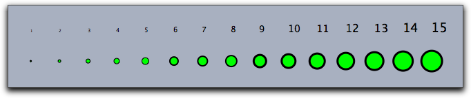
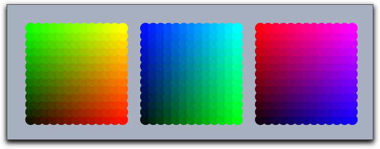
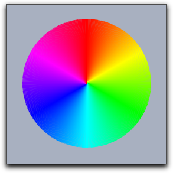

gsave()grestore()greset()gsave() and grestore() are provided. The gsave operator stores all information about the graphic state (sizes, colors, opacities) in a stack. The grestore operator reverses this effect by popping the information from the stack. Finally, the greset operator sets the stack back to its initial state. In addition to appearance information, information on the local coordinate system is stored as well.pointsize(<number>)linesize(<number>)textsize(<number>)pointsize(<number>), linesize(<number>), and textsize(<number>). The size is represented by a real number. For lines and points, the sizes are assumed to be integers between 1 and 20. The sizes encode absolute pixel values. The following code produces the picture below:sizes=1..15; forall(sizes, pointsize(#); textsize(#+4); draw((#,0)); drawtext((#,1),#); )
 |
| color: | vector: |
| black | (0,0,0) |
| red | (1,0,0) |
| green | (0,1,0) |
| blue | (0,0,1) |
| cyan | (0,1,1) |
| magenta | (1,0,1) |
| yellow | (1,1,0) |
| white | (1,1,1) |
pointcolor(<colorvec>)linecolor(<colorvec>)textcolor(<colorvec>)color(<colorvec>)pointcolor(<colorvec>), linecolor(<colorvec>), and textcolor(<colorvec>). Furthermore, the operator color(<colorvec>) simultaneously sets the color of all types of objects.0 will be replaced by 0 and values above 1 will be replaced by 1.
n=13;
ind=1..n;
pointsize(9);
forall(ind,i,
forall(ind,j,
pointcolor((i/n,j/n,0));
draw((i,j),noborder->true);
pointcolor((0,i/n,j/n));
draw((i+15,j),noborder->true);
pointcolor((j/n,0,i/n));
draw((i+30,j),noborder->true);
)
)
 |
alpha(<number>)0 and 1. Here 0 stands for completely transparent and 1 for completely opaque. Values that are outside this range are set to either 0 or to 1. red(<number>)0. The red value is set to <number>.green(<number>)0. The green value is set to <number>.blue(<number>)0. The blue value is set to <number>.gray(<number>)<number>.hue(<number>)<number> lies between 0 and 1. This range of values represents a full rainbow color cycle. For larger numbers, the cycle repeats periodically.n=360; ind=(1..n)/n; linesize(2); forall(ind, color(hue(#)); draw((0,0),(sin(#*2*pi),cos(#*2*pi))) )
 |
Page last modified on Friday 02 of September, 2011 [17:18:36 UTC].
The original document is available at
http://doc.cinderella.de/tiki-index.php?page=Appearance%20of%20Objects